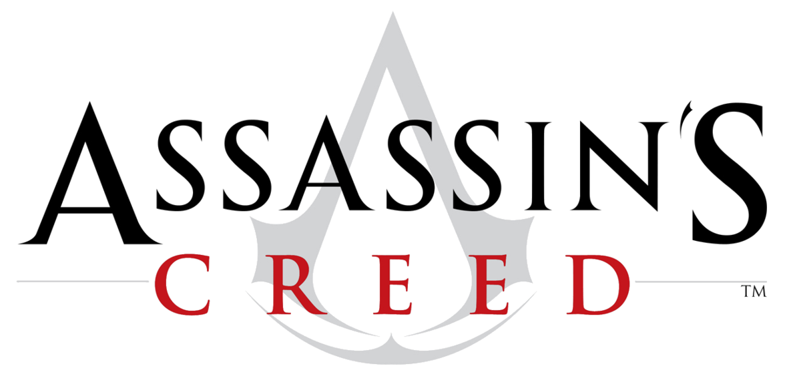

L’entreprise Ubisoft s’est spécialisée dans les secteurs d’activité de l’informatique et de l’électronique, et s’impose en France dans le secteur de l’industrie vidéoludique.
Les licences phares
Elle possède aujourd’hui une quarantaine de franchises qu’ils ont soient développé eux-mêmes, soient acheté à d’autres studios. Par exemple, Asphalt sorti en 1986 est un jeu vidéo d’action édité par Ubisoft qui l’a propulsé dans son domaine d’activité et a généré 10 millions d’euros.
Parmi ses licences phares se trouvent notamment Rayman, Far Cry, Assassin’s Creed, etc.

Le chiffre d'affaires d’Ubisoft en 1998 est de 132 millions d’euros alors qu’en 2016 il était de 1,459 milliard d’euros, ce qui montre que les licences et autres jeux qu’Ubisoft a développés ou édités ont impacté la croissance du chiffre d’affaires.
Autres activités
Ils ont également créé leur propre maison d’édition de bande dessinée et leur première parution fut en 2009. Récemment, ils se sont associés à Glénat, une maison d'édition de bande dessinées française afin de réaliser des oeuvres liées à une de leurs licences très connue, Les Lapins Crétins.
Dans le domaine de l’audiovisuel, Ubisoft a élaboré son propre studio de production qui diffuse des séries en lien avec leurs licences phares comme Assassins’s Creed par exemple. Bien moins connu du grand public, Ubisoft a ouvert également un parc d'attractions à Montréal.
Comme toute grande entreprise à succès, Ubisoft a au fur et à mesure dû se confronter à de nombreux concurrents, les plus connus et marquants sont Lucasfilm Games, Electronic Arts plus connu sous le diminutif EA, ou encore Take-Two Interactive.